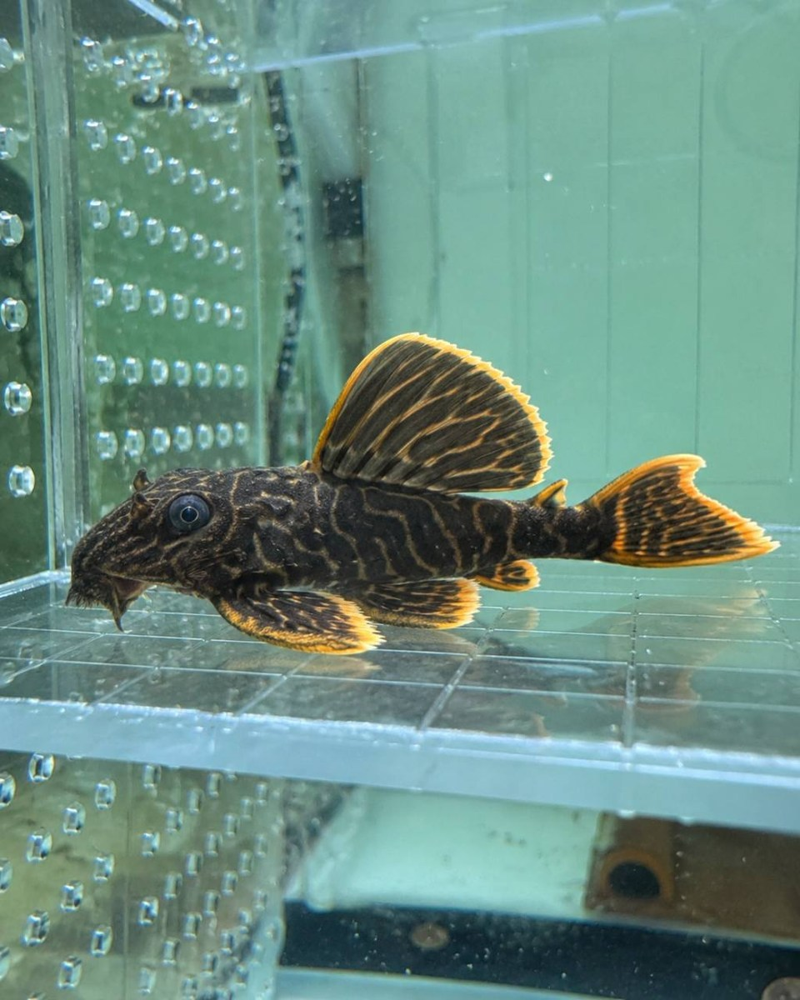
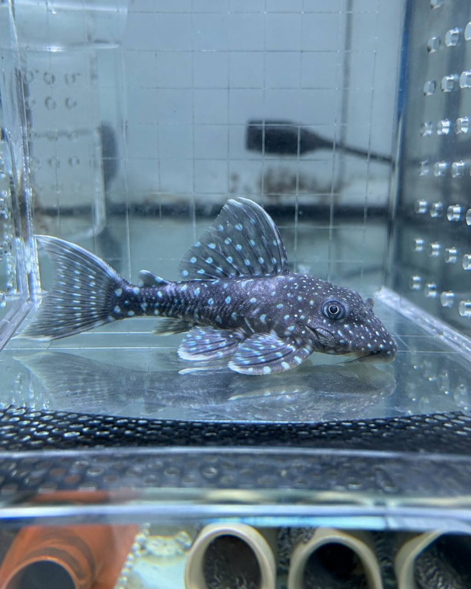

新魚入缸前，先完成五項基礎觀察
用呼吸、體表、腹部、活動與進食建立第一份個體狀態紀錄。
異形專賣・專業繁殖・飼養交流。以真實個體影像、清楚來源紀錄與持續觀察，陪你找到適合自己的飼養節奏。

同樣被稱作異形，外觀、成長與照護需求仍可能差很多。網站以實際照片呈現，正式品系不從單張照片猜測。
從親魚狀態、環境變化、繁殖管觀察到幼魚成長，每一次記錄都讓下一次照護更有依據。目前紀錄架構已完成，待實際批次與日期確認後公開。
看繁殖紀錄方式
強哥水族希望把魚隻介紹、飼養知識與繁殖經驗放在同一個透明脈絡裡：看見真實個體，也看見每一個尚待確認的細節。
沒有來源佐證的學名、編號、價格與尺寸不會被寫成確定答案。
從預期成體、空間、溶氧、躲藏與餵食方式一起討論。
網站先整理問題，讓後續溝通從個體狀況與實際環境開始。
網站不會自動送出資料；你可以產生一份預約摘要，再交給已確認的聯絡管道。